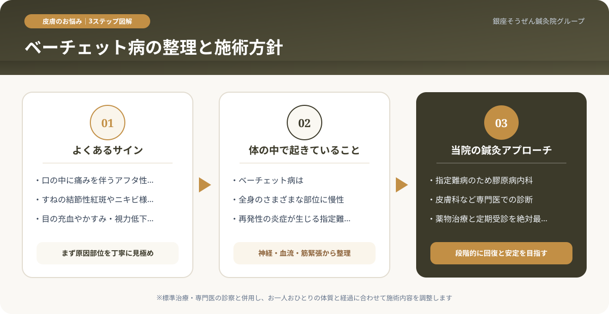
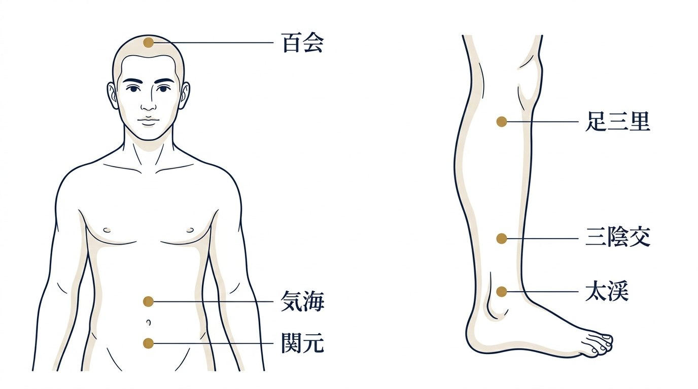

ベーチェット病の鍼灸
口腔粘膜や皮膚・眼・外陰部などに慢性の炎症を繰り返す指定難病です。専門医での診療・管理を最優先とし、保温とストレス緩和を補完的に支えます。
まず知っておきたい要点と改善の流れ

ベーチェット病は、全身のさまざまな部位に慢性・再発性の炎症が生じる指定難病（全身性炎症性疾患）で、20〜40代（特に30代前半）の発症が多く見られます。明確な原因は解明されていませんが、遺伝的な素因を背景に、細菌・ウイルス感染、ストレス、喫煙などの環境要因や免疫系の過剰反応が複雑に絡み合って発症すると考えられています。眼や血管・神経・消化器病変を伴う場合があり専門管理が不可欠です。
このようなお悩みはありませんか？
- ✓口の中に痛みを伴うアフタ性口内炎が何度も繰り返しできる
- ✓すねの結節性紅斑やニキビ様の皮疹など皮膚症状が出やすい
- ✓目の充血やかすみ・視力低下など眼症状（ぶどう膜炎）が心配
- ✓外陰部の潰瘍や全身の倦怠感・関節痛があり体調の波が大きい
当院の施術アプローチ・改善の流れ
なぜ鍼灸で改善へ向かうのか？（作用機序の図解）
ベーチェット病に対する鍼灸は、神経性炎症・掻痒（かゆみ）伝達と自律神経の鎮静機序を通じて、お体本来の回復力を引き出します。

湿疹・傷口への直接刺激を避け、曲池・血海・築賓・三陰交など全身の調整穴へアプローチします。
痒み感覚を伝える神経経路の過敏性を鎮め、「かゆい→掻く→悪化」の悪循環を断ちます。
交感神経の過緊張や夜間覚醒を和らげ、皮膚の修復が進みやすい血流と睡眠環境を整えます。
標準の保湿・外用・内服治療と協調し、ストレスや季節変化で悪化しにくい土台を支えます。
院長YouTube解説・関連動画
症状は、口腔粘膜のアフタ性潰瘍、外陰部潰瘍、皮膚症状、眼症状
ベーチェット病の主な症状は、口腔粘膜のアフタ性潰瘍、外陰部の潰瘍、皮膚症状、眼症状です。
口腔粘膜の再発性アフタ性潰瘍はほとんどの人に現れる症状です。口唇や頬粘膜、舌、歯肉、口蓋粘膜に円形で境界のわかりやすい潰瘍ができます。何度も繰り返し起こるという特徴があります。
皮膚症状では、下腿伸側や前腕に結節性の紅斑様皮疹が現れます。皮膚が紅くなり痛みを感じます。顔や頸、胸部などにはにきびのような皮疹ができ、場合によっては下腿などの皮膚の表面に近い血管に血栓性静脈炎が現れることもあります。
外陰部潰瘍は、男性の場合陰嚢、陰茎、亀頭に潰瘍が現れ、女性の場合は大小陰唇、膣粘膜に潰瘍が現れます。この潰瘍には痛みもあります。
眼症状は、ベーチェット病の症状の中で1番重大な症状です。ほとんどの場合両眼ともに症状が現れます。虹彩毛様体炎が起こることによって眼痛、充血、羞明、瞳孔不整が現れます。
場合によっては、網膜絡膜炎を起こし、視力が下がり失明する可能性もあります。
口内炎：これはベーチェット病に最も一般的に関連する症状で、ほぼ全員に見られます。これらは一般的に口内潰瘍として知られ、痛みを伴う小さな白または赤色の潰瘍として口腔内に現れます（参考：Criteria for diagnosis of Behçet's disease. International Study Group for Behçet's Disease, 1990）。
性器潰瘍：ベーチェット病の約半数以上が性器に潰瘍を発症します。これらは通常、男性の陰茎や女性の膣に出現し、口内潰瘍と同様に痛みを伴うことがあります（参考：Kural-Seyahi, E., Fresko, I., Seyahi, N., et al., 2013）。
皮膚の症状：皮膚の症状もベーチェット病の典型的な特徴で、約半数に見られます。これらには、血管炎や皮膚潰瘍、赤みを帯びた発疹などが含まれます（参考：Behçet's disease. DermNet NZ, 2018）。
眼症状：ベーチェット病には、視力を損なう可能性のある重大な眼症状が関連しています。これには、虹彩炎（虹彩の炎症）、脈絡膜炎（眼球の血管層の炎症）、視神経炎（視神経の炎症）などがあります（参考：Tugal-Tutkun, I., Onal, S., Altan-Yaycioglu, R., Huseyin Altunbas, H., UrganciogluM., 2004）。
関節症状：約半数以上が関節症状を示します。最も一般的に影響を受けるのは膝や足首ですが、肘や手首など他の関節も影響を受けることがあります。症状には、痛み、腫れ、朝のこわばりなどがあります（参考：Kiraz, S., Ertenli, I., Oztürk, M. A., Haznedaroğlu, İ. C., Celik, İ., & Çalgüneri, M., 2002）。
胃腸症状：ベーチェット病の一部では、潰瘍、腹痛、下痢、食道炎、胃炎などの胃腸症状を経験します（参考：Hatemi, G., Silman, A., Bang, D., et al., 2008）。
神経系の症状：ベーチェット病の患者の約5〜10%が、神経症状を示すことがあります。この状態は神経ベーチェット病と呼ばれ、頭痛、めまい、視覚障害、認知機能の問題、バランスや協調性の問題を引き起こすことがあります（参考：Al-Araji, A., & Kidd, D. P., 2009）。
心臓や血管への影響：ベーチェット病は心臓や血管にも影響を及ぼすことがあり、これには心臓弁膜症、心筋炎、大血管炎、血栓症などが含まれます（参考：Belizna, C., Hamidou, M., Levesque, H., Guillevin, L., & Shoenfeld, Y., 2007）。
ベーチェット病の症状は広範で多様であり、一人一人によってその体験は大きく異なることがあります。
ベーチェット病の改善方法は症状によって様々です。
ベーチェット病の病状は人によって非常に様々です。そのため、全ての症状に対応できる改善方法はありません。現れている症状や症状の程度に合わせて改善を行なっていくことが大切なのです。
多くの場合、症状に合わせて薬を使って改善を行います。
ベーチェット病で大切なことは、体をきちんと休めることと、全身を温めることです。さらにストレスを溜めないようにすることも大切です。
喫煙は病気を悪化させる可能性もあります。そのため、禁煙することをおすすめします。食事においては特に摂らないほうが良いものはありません。バランスのとれた食事をすることが大切です。
神経免疫難病・全身倦怠感の土台づくりツボ図解
実際の施術ではお一人おひとりの体質・症状に合わせて選穴しますが、多発性硬化症・重症筋無力症・膠原病等の疲労・自律神経サポートの臨床でよく用いられる代表的なツボの目安です。

📌 代表的なツボの詳細一覧表を開く（6穴） ▼
| ツボ名 | 位置の目安 | 主な狙い | セルフケアの注意点 |
|---|---|---|---|
| 百会（ひゃくえ） | 頭頂部の中央 | 中枢疲労の緩和・自律神経バランス調整 | 疲労が強い日は極低刺激に留めます。 |
| 気海（きかい） | おへそから指2本分下 | 全身の回復力・呼吸の深さのサポート | 手のひらで温める（手当て）だけでも有効です。 |
| 関元（かんげん） | おへそから指4本分下 | 深部体温・下腹部の巡りと体力維持 | 熱いお灸は避け心地よい温かさに留めます。 |
| 足三里（あしさんり） | 膝の下外側、指4本分下 | 胃腸吸収と全身の体力・倦怠感ケア | 刺激過多にならないよう短時間で行います。 |
| 三陰交（さんいんこう） | 内くるぶしの上から指4本分上 | 末梢循環・睡眠の質・ホルモン自律神経の調和 | 妊娠中は強い刺激を避けます。 |
| 太渓（たいけい） | 内くるぶしとアキレス腱の間のくぼみ | 深い疲労感・冷え・回復力の底上げ | 優しく温めながら深呼吸を合わせます。 |
国際査読論文の科学的エビデンス
国際的な医学データベース（PubMed・Cochrane等）で報告されている多発性硬化症・重症筋無力症・膠原病等の疲労・自律神経サポート領域の代表的な査読済み鍼灸研究をまとめています（標準治療との併用や研究上の限界を含めて正確に掲載）。
📚 査読論文データ・PubMed出典リンクを開く（4件） ▼
| 年・研究デザイン | 対象・規模 | 主な結果 | 限界・出典 |
|---|---|---|---|
| 2023年 多施設3群RCT | 慢性特発性蕁麻疹 330名（3大学病院） | 4週時のUAS7変化量は真鍼-8.2 vs シャム-4.1 vs 待機-2.2と統計的有意差を確認。 | 最小臨床的重要差には未達・短期追跡。 Ann Intern Med (PMID: 37956431) |
| 2024年 メタ解析 | アトピー性皮膚炎 8 RCTs（n=463） | SCORAD（MD -10.61, p=0.004）、掻痒VAS（MD -14.71, p<0.00001）、DLQI（p<0.0001）が有意改善。 | EASI・IgEは有意差なし、大規模検証が課題。 BMJ Open (PMID: 39638592) |
| 2021年 シャム対照RCT | 軽〜中等症アトピー性皮膚炎 36名（韓国） | 4週時の総SCORAD変化は真鍼-11.83 vs シャム+0.45（P<0.0001）、終了4週後も持続。 | 単施設・小規模（重症例への外挿は慎重）。 BMC Complement Med Ther (PMID: 33926433) |
| 2023年 メタ解析 | 難治性掻痒（尿毒症性掻痒）7 RCTs（n=504） | 通常治療比で有効率RR 1.28（P=0.003）、透析併用でRR 1.42（P=0.0002）と有意に掻痒軽減。 | 透析患者対象のため一般皮膚疾患への外挿に留意。 J Pain Symptom Manage (PMID: 36055470) |
参考文献・出典
- 2023年 多施設3群RCT（慢性特発性蕁麻疹 330名（3大学病院））— Ann Intern Med (PMID: 37956431)
- 2024年 メタ解析（アトピー性皮膚炎 8 RCTs（n=463））— BMJ Open (PMID: 39638592)
- 2021年 シャム対照RCT（軽〜中等症アトピー性皮膚炎 36名（韓国））— BMC Complement Med Ther (PMID: 33926433)
- 2023年 メタ解析（難治性掻痒（尿毒症性掻痒）7 RCTs（n=504））— J Pain Symptom Manage (PMID: 36055470)
よくある質問（FAQ）
Q. ベーチェット病の治療中に鍼灸を受けても大丈夫ですか？▼
Q. 日常生活で最も気をつけるべきことは何ですか？▼
あわせて読まれる関連疾患（皮膚のお悩み）
自己免疫が筋肉や皮膚を攻撃し筋力低下や倦怠感を起こす膠原病（指定難病）です。専門医治療を最優先に、安定期の体調維持を支えます。
自己抗体により皮膚や粘膜に水疱・びらんが生じる指定難病です。専門医の免疫抑制療法を最優先に、安定期の体調ケアを補完的に行います。
高熱とともに全身の皮膚や粘膜にびらん・水疱が生じる重症薬疹（指定難病）です。緊急入院が必須で、退院後の安定期ケアのみ対応します。
弾性線維の変性により皮膚・眼・血管に障害が生じる指定難病です。専門医の定期管理を最優先に、安定期の体調維持を補完的に支えます。
明らかな原因なく後天的に全身の汗が出なくなり、体温調節が困難になる指定難病です。皮膚科での治療と冷却対策を最優先とします。
出生時から全身が厚い板状の角質に覆われる最重症型の先天性魚鱗癬です。専門医療機関での全身・皮膚管理が最優先となります。
CLINICAL RECOVERY CASES
✨ 実際の臨床改善事例・回復経過を見る
銀座本院をはじめ各院での実際の改善事例を症状別に絞り込んでご確認いただけます。
おひとりで悩まず、まずはご相談ください
銀座本院・川口・大宮・横浜・博多・田無の各院でご予約を承っております。